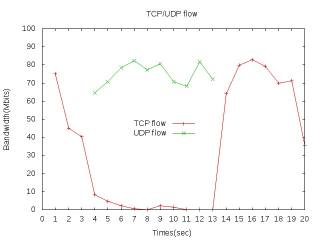
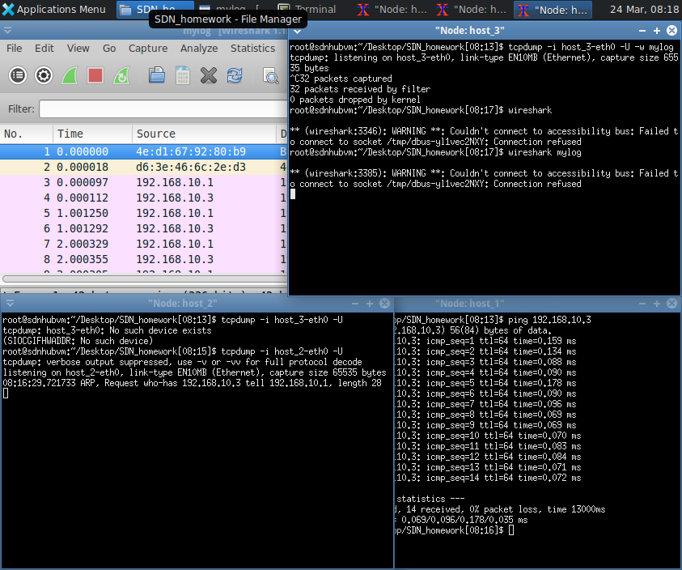

啊啊啊~ 昨天精神衰弱沒睡覺，還上了整個早上的課，感覺快掛了。
午睡後依舊沒睡好~~~ 哀，繼續趕工啦。
這堂課有 2 個路由器實驗以及 1 個橋接器實驗：
1. Router(1)
a. 網路拓樸設定
b. 實驗操作
2. Router(2)
a. 網路拓樸設定
b. 實驗操作
3. Bridge
a. 網路拓樸設定
b. 實驗操作
Router(1)
網路拓樸設定

模擬 3 個 Hosts 中間經過一個 Router。
參考範例：example
實驗操作
本次實驗是要印證 TCP 跟 UDP 的封包同時傳送時，通道的變化
進入 terminal
user:$ chmod +x test2.py user:$ sudo ./test2.py # 檢查網路是否暢通 mininet> host_1 ping host_2 -c 3 mininet> host_1 ping host_3 -c 3 mininet> host_2 ping host_3 -c 3 mininet> xterm host_1 host_2 host_3 host_3 # host_3 做 Server 監聽封包 host_3:$ iperf3 -s -i 1 -p 5577 host_3:$ iperf3 -s -i 1 -p 5588 # host_1 送 TCP 封包 host_1:$ iperf3 -c 192.168.30.2 -p 5577 -t 20 # host_2 送 UDP 封包 host_2:$ iperf3 -c 192.168.30.2 -p 5588 -t 10 -b 100M -l 1500 -l: 是指 Package Size(扣掉 Mac Header 後的大小)繪製圖片，如果有需要知道程式碼在幹嘛，上方連結可以點開看看。
gnuplot> set title "TCP/UDP flow" gnuplot> set xlabel "Times(sec)"; set ylabel "Bandwidth(Mbits)" gnuplot> set xrange [0:20]; set xtics 0, 1, 20 gnuplot> set yrange [0:100]; set ytics 0, 10, 100 gnuplot> set key at 12,50 gnuplot> set output "TCP/UDP_flow.jpeg" gnuplot> plot "Flow" using 1:2 title "TCP flow" with linespoints, "Flow" using 1:3 title "UDP flow" with linespoints gnuplot> replot # using X:Y 是指取哪兩行做資料的 X 座標跟 Y 座標

由於 UDP 沒有 Flow Control，所以 TCP 的頻寬完全被占走
Router(2)
網路拓樸設定

模擬 2 個 Hosts 中間經過 3 個 Routers。
參考範例：example
實驗操作
進入 terminal
user:$ chmod +x test3.py user:$ sudo ./test3.py # 檢查網路是否暢通 mininet> host_1 ping router_1 -c 3 mininet> host_1 ping router_2 -c 3 mininet> host_1 ping router_3 -c 3 mininet> host_1 ping host_2 -c 3
Bridge
網路拓樸設定

模擬 3 個 Hosts 中間經過一個 Router。
參考範例：example
實驗操作
需要安裝 Bridge ，指令為
sudo apt-get install bridge-utils進入 terminal
user:$ chmod +x test4.py user:$ sudo ./test4.py # 檢查網路是否暢通 mininet> host_1 ping host_2 -c 3 mininet> host_1 ping host_3 -c 3 mininet> host_2 ping host_3 -c 3封包分析：因為 Bridge 跟 Hub 差別在多了學習功能
目的：印正 Bridge 的廣播學習功能# Host 2 監聽封包 host_2:$ tcpdump -i host_2-eth0 -U # Host 3 監聽封包並寫進 Log host_3:$ tcpdump -i host_3-eth0 -U -w mylog host_1:$ ping 192.168.10.3 host_3:$ wireshark mylog
